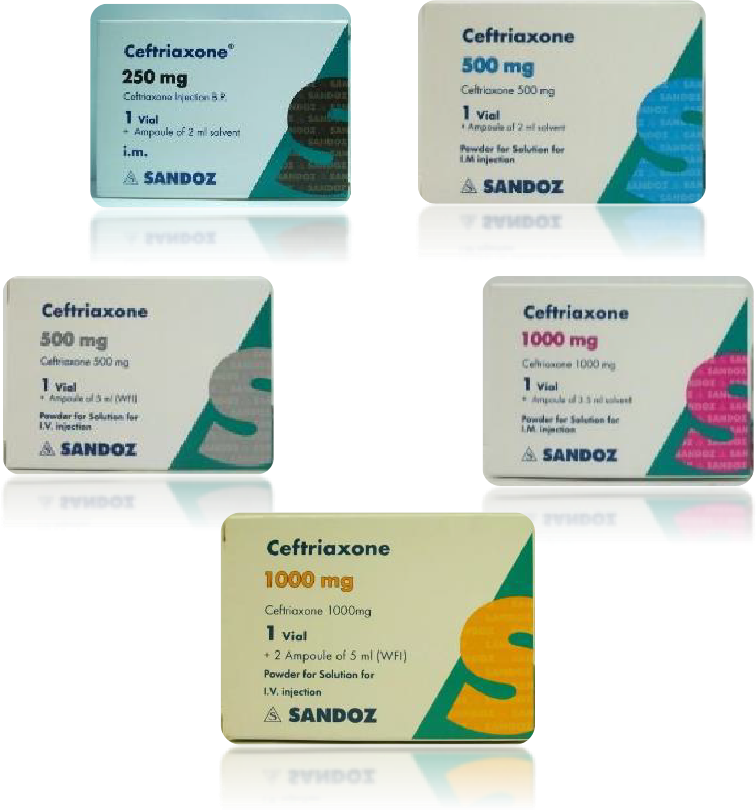

Available Cerftriaxone Products:
- Cerftriaxone 250mg I.M.
- Cerftriaxone 500mg I.M. & I.V
- Cerftriaxone 1000mg I.M. & I.V

Method of administration
I.M. injections:
- Intramuscular administration should be considered when the
intravenous route is not possible or less appcropriate for the patient
- Dosages >1 g should be divided and
injected at more than one site.
- As the solvent used is lidocaine, the
resulting solution should never be
- The maximum single dose of lidocaine
in children should not exceed 5 mg/kg
body weight
- For obese children, the maximum dose
should be calculated based on ideal
bodyweight for their gender and age.
I.V. injections:
- For doses greater than 2 g
intravenous administration should
be used.
- Ceftriaxone can be administered by:
- o Intravenous infusion over at least
30 minutes (preferred route) or
- o Slow intravenous injection over 5
minutes preferably in larger
veins
- Intravenous doses of 50 mg/kg or
more in infants and children up to
12 years of age should be given by
infusion.
- Intravenous infusion: Ceftriaxone should
be dissolved in one of the following
calcium-free infusion solutions: [Sodium
chloride 0.9%, 0.45% or glucose 2.5%, 5
% 10%].
- Avoid mixing or reconstitution of
Ceftriaxone with calcium-containing
diluents (e.g. Ringer’s solution or
Hartmann’s solution) because a
precipitate can form.
- Ceftriaxone is contraindicated in
neonates (≤ 28 days) if they require (or
are expected to require) treatment with
calcium-containing intravenous solutions
including continuous calcium containing
infusions such as parenteral nutrition,
because of the risk of precipitation.